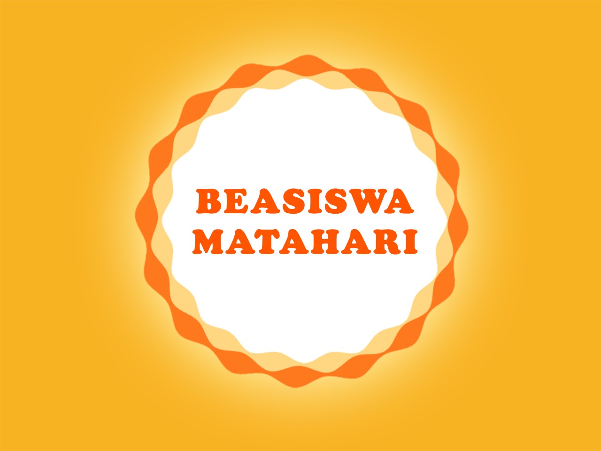

Formulir v2
Satu halaman untuk semua langkah pendaftaran
Halaman ini adalah pusat aksi untuk calon beswan, calon donatur, dan pengunjung yang ingin melapor kemajuan.
Semua link penting disusun terpisah dan mudah dipindai, sehingga pengunjung tidak perlu menebak formulir mana yang harus dibuka lebih dulu.

Form aktifFormulir beswan
Link paling menonjol, checklist paling jelas
Bagian ini memprioritaskan formulir utama, deadline, dan dokumen yang perlu disiapkan sebelum mulai mengisi.
Deadline dan aksi utama
18 Januari 2026 adalah batas pengisian formulir pendaftaran beswan untuk Semester Ganjil TA 2025/2026.
Jika Anda mengalami kendala saat mengisi formulir, hubungi tim Beasiswa Matahari melalui email agar bisa dibantu lebih lanjut.
Apa yang perlu disiapkan
- Rekomendasi dari dosen wali, pembimbing, atau wali organisasi.
- Transkrip resmi terakhir.
- Curriculum Vitae (CV).
- Slip gaji orang tua, maksimal 3 bulan terakhir.
- Kartu Keluarga.
- Essay.
Langkah singkat
Alur pendaftaran beswan
Formulir donatur
Jalur donatur dipisahkan agar tidak bercampur dengan beswan
Pengunjung yang ingin menjadi donatur bisa langsung membuka formulir tanpa harus membaca bagian beswan terlebih dahulu.
Apa yang terjadi setelah formulir diisi
Setelah Anda mengisi formulir, tim akan menghubungi Anda untuk tindak lanjut dan penjelasan mengenai skema donasi yang paling cocok.
Sun Flare
- Minimal donasi Rp 2.500.000 per semester.
- Minimal periode 1 semester.
- Pembayaran dapat dicicil setiap bulan.
Sun Spot
- Minimal donasi Rp 50.000 per bulan.
- Minimal periode 6 bulan.
- Transfer dapat diakumulasikan di awal periode.
Laporan keuangan bulanan dapat diakses melalui tautan berikut untuk menjaga transparansi program.
Dokumen pendukung
Laporan kemajuan
Bagian ini tetap mudah ditemukan, tetapi diposisikan sebagai dokumen pendukung, bukan aksi utama.
Form laporan kemajuan
Laporan kemajuan digunakan untuk memantau perkembangan dan kebutuhan penerima. Tautan ini bisa dibuka kapan saja saat diperlukan.
Catatan cepat
- Pastikan data yang diisi sesuai kebutuhan laporan.
- Gunakan link ini hanya untuk pelengkap proses pemantauan.
- Jika butuh bantuan, email tim Beasiswa Matahari tetap aktif.